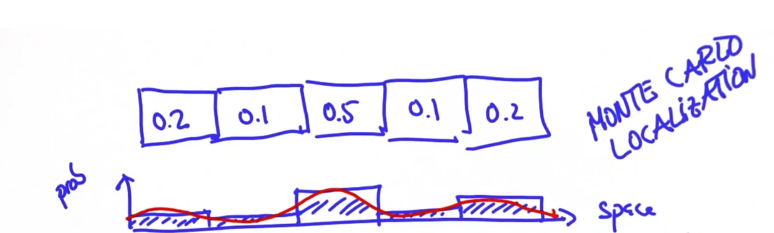
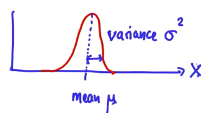
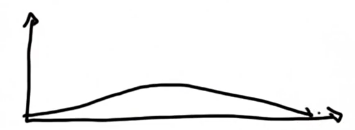
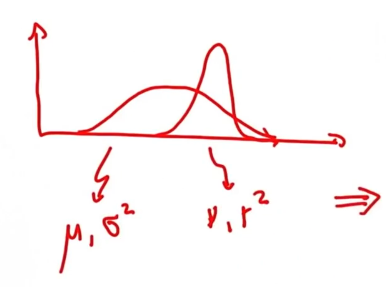

This is a tracking technique. It is similar to the Monte Carlo Localization we talked about previously, however there are some key differences:
- Kalman Filter maintains a continuous state (therefore uses a uni-modal distribution: probability density function only has one peak)
- Monte Carlo Localization uses discrete state to represent the world (uses a multi-modal distribution: probability density function has multiple peaks)
In Monte Carlo Localization we assigned a probability to each cell in the world:
[\(0.2\)][\(0.1\)][\(0.5\)][\(0.1\)][\(0.2\)]
What we did is we divided the continuous space into a finite number of cells, that approximates the posterior distribution (which is continuous: red line) by a histogram (blue bars) over the original distribution.

However in Kalman Filters this distribution is given by a Gaussian Distribution.
A Gaussian Distribution is a continuous function which is described in \(\mathbb{R}\) by the mean \(\mu\) and the variance \(\sigma^2\).

The formula is the following:
\begin{align} f(x) = \frac{1}{\sqrt{2\pi\sigma^2}} \exp^{-\frac{1}{2}\frac{(x-\mu)}{\sigma^2}} \end{align}Where \(\frac{1}{\sqrt{2\pi\sigma^2}}\) is a constant that normalizes \(\exp^{-\frac{1}{2}\frac{(x-\mu)}{\sigma^2}}\)
Remark The bigger the covariance \(\sigma^2\) the wider the distribution, which means we are less certain of the state. If it is narrow, that means we are confident about our location.
Like with localization Kalman Filters operate within a cycle, that is, it iterates like so:
- Measurement (or measurement update), which corresponds to application of the Baye's Rule (product)
- Motion (or prediction), which corresponds to the application to the Total Probability Theorem, resulting in a convolution or sum
Suppose the prior distribution is as follows:

Where the covariance is very large, so we are very uncertain about a location. And we recieve a measurement of the form:
Which is much more certain about the location. Then the mean will shift accordingly (green line):

So, after multiplying the prior and the measurement shown previously, the resulting gaussian y more certain than both of the prior and the measurement gaussians. That is the covariance of this new gaussian is smaller, so the more measurements we have the more certain the are.
Why does this happen? Well, given these two distributions:

Where the first distribution is characterized by \((\mu, \sigma^2)\) and the second distribution is characterized by \((\nu, r^2)\). The product of the two is a distribution characterized by \((\hat{\mu}, \hat{\sigma}^2)\), computed as follows:
\begin{align} \hat{\mu} = \frac{r^2\mu + \sigma^2\nu}{r^2 + \sigma^2} \end{align}Observe, because \(\sigma^2 >> r^2\) in our example, then \(\hat{\mu}\) will be closer to the second distribution's mean \(\nu\). Also:
\begin{align} \hat{\sigma}^2 = \frac{1}{\frac{1}{r^2} + \frac{1}{\sigma^2}} = \frac{\sigma^2 r^2}{\sigma^2 + r^2} \end{align}Thus, the updated covariance is not affected by the means and will always be smaller than \(\sigma^2\) and \(r^2\). We illustrate this is the following image, where the updated distribution is the one drawn in blue:

Note that the wider distribution represents the prior, the measurement represents the likelihood and the updated distribution represents the posterior.
Suppose, at moment \(t\), your location is represented as follows:

Where:
- The blue gaussian distribution represents your best guess at where your are at \(t\), and is characterized by \((\mu, \sigma^2)\)
- The green gaussian distribution represents the motion of \(\nu\) units, which has its own uncertainty, and is characterized by \((\nu, r^2)\)
- The red gaussian distribution represents you location at time \(t+1\) after the motion
This last distribution is characterized by:
\begin{align} \hat{\mu} = \mu + \nu \end{align} \begin{align} \hat{\sigma}^2 = \sigma^2 + r^2 \end{align}So, basically the mean is shifted \(\nu\) units and the covariance is made larger by summing \(\sigma^2\) and \(r^2\), as a result of summing the distributions.
Up until now we have been operating in a one dimensional space, however if we were to work withing higher dimensional spaces we would need to make use of Multivariate Gaussians. So a multivariate gaussian in a D-dimensional space is characterized as follows:
\begin{align} \mu = \begin{bmatrix} \mu_0 \\ \vdots \\ \mu_D \\ \end{bmatrix}, \Sigma = \begin{bmatrix} \sigma_{11} & \cdots & \sigma_{1D}\\ \vdots \\ \sigma_{D1} & \cdots & \sigma_{DD}\\ \end{bmatrix} \end{align}Also de density function is now, for \(x \in \mathbb{R}^D\):
\begin{align} f(x) = (2\pi)^{-\frac{D}{2}}|\Sigma|^{-\frac{1}{2}} \exp^{-\frac{1}{2}(x - \mu)^T\Sigma^{-1}(x-\mu)} \end{align}For example, a gaussian distribution in a two-dimensional space might have the form:
In this case we can see that the distribution is "tilted", that would mean that the variance of the x-axis and the variance of the y-axis is correlated. The case in which the variance in the y-axis is large and small in the x-axis is represented in the following image:
Given the following graph:

Where \(\hat{x}\) represents the velocity and \(x\) represents the location. In this first instance, we represent the position as an elongated gaussian because we do not know anything about the velocity. So, if we take into account each possible velocity in the y-axis and the localization distribution (blue gaussian distribution), then we end up with a gaussian distribution where the velocity and the location are correlated:
Suppose we take a new measurement (a second observation), which also tells us nothing about the velocity, it only gives us information about the location as the first observation did. Then:
However if we now multiply the prior (red gaussian) with the measurement or likelihood (green gaussian), then we obtain a new gaussian which gives us an estimate of the velocity as well as the localization:

So we were able to infer the velocity by only observing the location.
Kalman Filters are made up from what it's called states, and we differentiate two different kinds of states:
- Observables (in our case the location)
- Hidden (in our case the velocity, which i can never observe)
These two types of states interact with each other in the sense that a sequence of observable variables gives us information about the hidden variables. Thus we can estimate what these hidden variables are. Applied to our case scenario, multiple observations of where we are, that is, our location, we can estimate how fast we are moving, that is, our velocity.
To design a Kalman Filter you need two things:
- A state transition function, which is usually a matrix \(F\):
- A measurement function, represented by the matrix \(H\):
For example, suppose we update the location and the velocity as follows:
\begin{align} x' = x + \hat{x} \end{align} \begin{align} \hat{x}' = \hat{x} \end{align}Then the transition function is represented as the following matrix:
\begin{align} F = \begin{bmatrix} 1 & 1 \\ 0 & 1 \\ \end{bmatrix} \end{align}And for the measurement function, we only observe the location not the velocity, therefore:
\begin{align} H = \begin{bmatrix} 1 & 0 \\ \end{bmatrix} \end{align}Given the following data:
- \(x\): estimate
- \(P\): uncertainty covariance
- \(F\): state transition function
- \(u\): motion vector
- \(z\): measurement
- \(H\): measurement function
- \(R\): measurement noise
So in the Kalman Filter cycle what we do is: first we perform the measurement update and then we perform the motion or prediction. More concretely:
-
Perform measurement update:
- Compute the error that compares the measurement with out prediction: \(y = z - H \cdot x\)
- Map the error into a matrix \(S\) by projecting the system uncertainty onto the measurement space: \(S = H \cdot P \cdot H^T + R\)
- Map this projection onto a matrix \(K\): \(K = P \cdot H^T \cdot S^{-1}\)
-
Finally update
- Estimate: \(x' = x + (K \cdot y)\)
- Uncertainty: \(P' = (I- K\cdot H) \cdot P\)
- Compute the prediction